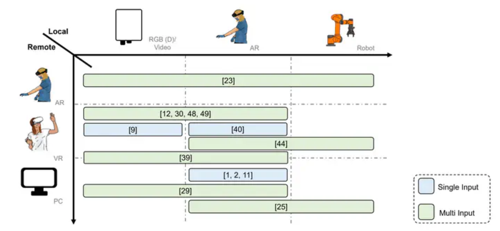

<section>
    <div class="container">

        <hr>
        <h4 id="2025">2025</h4>
        <hr>

        <div class="row">
            <div class="col-lg-4 col-md-4 col-sm-12 text-center">
                
            </div>
            <div class="col-lg-8 col-md-8 col-sm-12" style="padding:2%">
                <span class="papertitle">Extended Reality Teleconsultation for Medical Interventions: State of the Art and Perspective</span>
                <br>
                <span style="font-weight: lighter">H. Schieber, L.Theelke, D. Wilhelm, C. Piazza, U. Eck, </span>
                J. Kreimeier <span style="font-weight: lighter">, and D. Roth </span>
                <br>
                <em>IEEE Conference on Virtual Reality and 3D User Interfaces, Workshop XR Health, </em>2025
                <br>
                <p class="d-inline-flex gap-1">
                    <a class="btn btn-dark" data-bs-toggle="collapse" href="#collapseXRHealth_Poster" role="button"
                       aria-expanded="false" aria-controls="collapseXRHealth_Poster">
                        Abstract
                    </a>
                    <a class="btn btn-dark"
                       href="https://ieeexplore.ieee.org/abstract/document/10972879">IEEE</a>
                </p>
                <div class="collapse" id="collapseXRHealth_Poster">
                    <div class="card card-body">
                        <p>
                            Objective: Extended reality (XR) teleconsultation is used in surgery and medical emergencies, employing various technological approaches that differ in accuracy, timeliness, and user preference.
                            We conducted a systematic literature review following  PRISMA. We searched the databases IEEE Xplore, Springer Link, ACM and added an additional manual search. In total, we found 187 studies and included 14 in our review.
                            Conclusion: Our findings highlight the widespread use of video-based streaming and 3D reconstruction based on static RGB-D sensor. We found limitations in the reconstruction quality, where existing work would benefit from high-quality rendering. Interaction via annotations is common, addressing key usability needs for various surgeries and emergency situations. A standardized evaluation for interaction techniques would be beneficial for comparability. Our findings hold significant implications for improving teleconsultation and evaluation of XR telemedicine approaches.
                        </p>
                    </div>
                </div>
            </div>
        </div>
        <br>

    </div>
</section>